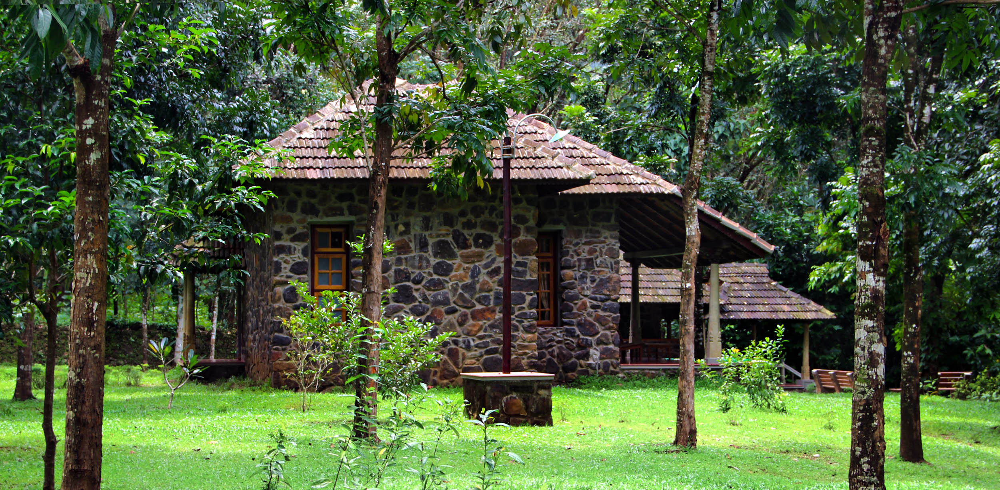
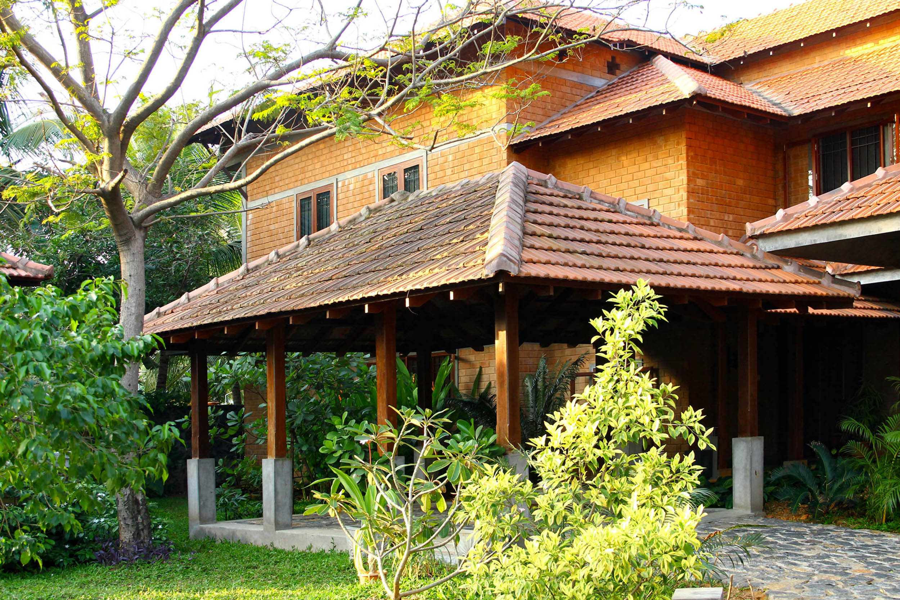

La Casa Roja
 Discover +
Discover +
[Scroll down]
Architecture
Homes, Hospitality projects.

Architectural and conservation consultancy established by Dr. Benny Kuriakose in 1991.
La Casa Roja is a house on the outskirts of Chennai, designed around an existing fruit orchard.
La Casa Roja is a house on the outskirts of Chennai, designed around an existing fruit orchard.
Surfaces, lighting and furniture, seen in the studio's project photographs.
La Casa Roja is a house on the outskirts of Chennai, designed around an existing fruit orchard.



Illustrative stage names for this preview.
Discuss the actual workflow with the studio.